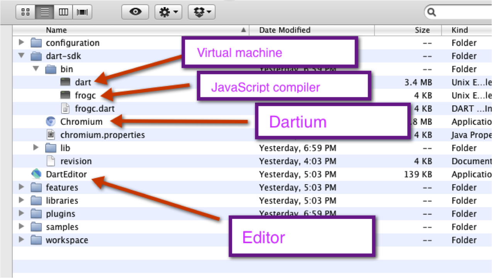
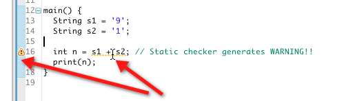

Dart team
March 5, 2012

Download new Editor builds frequently.
$DART_SDK/bin/dart --enable_type_checks prog.dart
$DART_SDK/bin/frogc --enable_type_checks prog.dart
int timesTwo(num n) => n * 2;
timesTwo(3.2); // FAILS in checked mode
// dynamic type assertion throws exception
// because returned value is not an int
String s1 = '9'; String s2 = '1'; ... int n = s1 + s2; // Static checker generates WARNING!! print(n);
Use checked mode during development.
main() {
print("Hello, Dart!");
}
main()
print() goes to stdout (cmd line) or console.log (web app)
final can't be changed after initialization
var hitPoints = 25;
int hitPoints = 25;
final Date birthDate = new Date.fromString('2011-04-23 12:00:00Z');
String name; // null
int age; // null
+ for String concat
String greeting = 'Hello, ${person.name}!';
String greeting = "Hello, $to.";
String html = """ <tr> <td>$amount</td> <td>$dueDate</td> </tr> """;
String regExpExample = r"Raw strings\n don't escape.";
@
String msg = 'Hello there and welcome to the Dart '
'Language presentation.';
true, it's treated as false
if (1) { } else { print('false!'); } // you don't want to do this
// Dart != JavaScript
// fails in checked mode
// false in production mode
if (!atLeastTwentyOneInUS()) { // much better, this is a real boolean
denyBeer();
}
// List literal
var fruits = [];
// or
List fruits = new List();
fruits.add('oranges');
// fixed size of 2
var candyBars = new List(2);
candyBars.add('snickers'); // ERROR, can't add to fixed size
candyBars[0] = 'snickers'; // OK
Fun fact: the word 'array' doesn't appear in the spec.
// Map literal
// keys are strings
var sites = {};
// or when using constructor,
// keys are Hashable
var sites = new Map();
map['dart'] = 'http://www.dartlang.org';
print(map.containsKey('pascal')); // false
var fruits = new Set();
fruits.add('apples');
fruits.add('oranges');
fruits.add('apples');
print(fruits.length); // 2
Collection filter(bool f(element))
forEach(f(element))
Collection map(f(element))
('hello' is String) == true;
(4 is! String) == true;
(4 is int) == true;
Use types, at least for the "surface area" of your code.
==
===
==
.equals(other)
===
say(msg) {
print('$msg Pass it on.');
}
// assign to variable
var speak = say;
// use anonymous functions
var yell = (msg) {
speak('$msg!!!');
}
yell('Dart is here'); // Dart is here!!! Pass it on.
say(msg, [via]) {
if (via != null) {
print('$msg sent by $via');
} else {
print(msg);
}
}
say('howdy'); // howdy
say('howdy', 'smoke signals'); // howdy sent by smoke signals
say(msg, [via]) {
if (via != null) {
print('$msg sent by $via');
} else {
print(msg);
}
}
print(say('hello', via:'tin can and string'));
say(msg, [via = 'first class']) {
print('$msg sent by $via');
}
print(say('howdy')); // howdy sent by first class
Function makeAdder(num n) {
return (num i) => n + i;
}
main() {
var add2 = makeAdder(2);
print(add2(3)); // 5
}
main() {
loudify(msg) {
var megaPhone = new MegaPhone();
megaPhone.enable();
return megaPhone.amplify(msg);
}
print(loudify("Howdy"));
}
Function consolePrint = print;
class Printer {
print(m) => consolePrint(m);
}
// or
consolePrint(m) => print(m);
class Printer {
print(m) => consolePrint(m);
}
typedef defines aliases for function types.
typedef int Compare(a, b);
class SortedCollection {
Compare compare;
SortedCollection(this.compare);
}
int sort(a, b) => ... ;
main() {
SortedCollection collection = new SortedCollection(sort);
print(collection.compare is Function); // true
print(collection.compare is Compare); // true
}
if (isRaining()) {
you.bringRainCoat();
} else if (isSnowing()) {
you.wearJacket();
} else {
car.putTopDown();
}
main() {
var callbacks = [];
for (var i = 0; i < 2; i++) {
callbacks.add(() => print(i)); // closure around the value of i
}
callbacks.forEach((c) => c());
}
// prints 0 then 1
candidates.forEach((candidate) => candidate.interview());
var collection = [0, 1, 2];
for (var x in collection) {
print(x);
}
while (!auctionItem.currentWinner(bidder) &&
auctionItem.currentBid < bidder.maximumBid) {
auctionItem.placeBid(bidder, auction.currentBid + 1);
}
do {
printLine();
} while (!atEndOfPage());
var command = 'OPEN';
switch (command) {
case 'OPEN':
executeOpen();
// ERROR: missing break causes an exception to be thrown!!
case 'CLOSED':
executeClose();
break;
}
var command = 'CLOSED';
switch (command) {
case 'CLOSED': // empty case falls through
case 'NOW_CLOSED':
// runs for both CLOSED and NOW_CLOSED
executeClose();
break;
}
Throw an Exception, or any object
buyMoreLlamas() {
if (llamas.isEmpty()) {
throw new OutOfLlamasException();
}
...
}
try {
buyMoreLlamas();
} catch(final OutOutLlamasException e) {
print("Buy more llamas!: $e");
} catch(final e) {
print(e); // catch-all
} finally {
cleanUpLlamaPens();
}
try {
rayTraceScene();
} finally {
cleanUpTempDir();
}
try {
rayTraceScene();
} catch(final InvalidSceneDescription e) {
upgradeSceneDescriptionFormat();
}
--enable_asserts
positiveRange(lower, upper) {
assert(lower > 0);
assert(upper > lower);
var range = new List(upper+1-lower);
for (var i = 0; lower <= upper; i++) {
range[i] = lower++;
}
return range;
}
positiveRange(2, 2);
Unhandled exception:
'/Users/sethladd/dart/loudify/loudify.dart': Failed assertion: line 3 pos 10: 'upper > lower' is not true.
class Point {
var x, y;
}
var p = new Point();
p.x = 2; // setter
p.y = 4;
print(p.x); // getter
class Point {
var x = 0, // OK, int literals are compile time constants
y = 0;
}
class Game {
var player = new Player(); // ERROR, not a compile time constant
}
// instead
class Game {
var player;
Game() {
player = new Player();
}
}
class Colors {
static final RED = 'red';
static final GREEN = 'green';
}
class Person {
String name;
String toString() {
return name;
}
}
class Employee extends Person {
String company;
String toString() {
return '$name works at $company';
}
}
var emp = new Employee();
emp.name = 'Alice';
emp.company = 'Google';
print(emp); // Alice works at Google
class A {
A() {
print("A");
}
}
class B extends A {
B() {
print("B");
}
}
void main() {
var b = new B(); // prints A then B
}
class Point {
var x, y;
Point(this.x, this.y);
}
var p = new Point(2, 4);
print(p.x); // 2
final fields must be initialized in initialization list.
this.
#import('dart:math');
class Point {
final num x;
final num y;
final num distanceFromOrigin;
Point(x, y) :
x = x,
y = y,
distanceFromOrigin = calcDistance(x, y) {
// do other setup now that this exists
}
static calcDistance(x, y) {
sqrt((x*x) + (y*y));
}
}
class DomElement {
DomElement.tag(String tagName) { ... }
DomElement.html(String html) { ... }
}
var button = new DomElement.tag("button");
Use named constructors for more readable code.
==, <, >, <=, >=, -, +, /, ~/, *, %, |, ^, &, <<, >>, []=, [], ~, call, negate
class Point {
final num x, y;
Point(this.x, this.y);
Point operator +(Point other) {
return new Point(x+other.x, y+other.y);
}
}
void main() {
var p1 = new Point(1, 2);
var p2 = new Point(2, 2);
var p3 = p1 + p2;
print(p3.x); // 3
}
// initially
class Person {
num age;
Person(this.age);
}
print(new Person(21).age); // 21
// after refactoring
class Person {
Date birthdate;
Person(this.birthdate);
num get age() {
return (new Date.now().difference(birthdate).inDays / 365).toInt();
}
}
var p = new Person(new Date.fromString('1991-01-01 12:00:00Z'));
print(p.age); // 21
#import('dart:html');
class Awesome {
Awesome(Element button) {
button.on.click.add((e) => cool()); // call cool() from this
}
cool() {
window.alert("inside Awesome.cool");
}
}
foo() {
print("From top level");
}
class Super {
foo() {
print("From super class");
}
}
class Sub extends Super {
whichFoo() {
foo(); // calls Super.foo or top level foo ?
}
}
void main() {
var sub = new Sub();
sub.whichFoo(); // prints "From top level"
}
class ListFactory{ factory List([int length = null]) { if (length === null) { return new GrowableObjectArray (); } else { return new ObjectArray (length); } } }
class Point {
final num x;
final num y;
const Point(this.x, this.y);
const Point.from(Point p) : x = p.x, y = p.y;
}
class GamePiece {
Point position = const Point(3,4);
}
class Duck {
quack() {
// complicated enterprise n-tier quack
}
}
class MockDuck implements Duck {
quack() {
// quack for testing
}
}
main() {
var mock = new MockDuck();
print(mock is Duck); // true!
}
List<Mammal> cows = new List<Cow>())
new List<String>() is List<Object> // true: every string is an object new List<Object>() is! List<String> // true: not all objects are strings new List<String>() is! List<int> // true: strings are not ints new List<String>() is List // true
class Card {
...
}
interface CardDatabase {
saveCard(Card card);
List allCards();
List cardsByYear(int year);
...
}
allCards() returns a list of cards
// your code
main() {
var cards = new CardDatabaseImpl();
List<Card> myCollection = cards.allCards();
}
List<Card> is List
class HashMap<K extends Hashable, V> implements Map {
...
}
Add generics to your typed code for better code completion and static analysis.
Learn more about Dart's generics in articles by Gilad Bracha and Eli Brandt.
interface Handler {
static final SUCCESS = 1;
static final FAILURE = 0;
onSuccess(Event e);
onFailure(Event e);
}
interface SocketHandler extends Handler {
onOpen(Event e);
onClose(Event e);
}
interface Cache<String, V> default MemoryCache {
Cache();
V operator [](String key);
void operator []=(String key, V value);
}
class MemoryCache<String, V> implements Cache {
...
}
Cache cache = new Cache(); // constructs a new MemoryCache
#library("dart:core");
#import("dart:coreimpl");
#source("runtime/bool.dart");
#source("runtime/collection.dart");
#source("runtime/comparable.dart");
#source("runtime/date.dart");
#source("runtime/double.dart");
#library('util');
_deleteTempFiles() { ... };
_truncateSwap() { ... };
cleanUp() {
_deleteTempFiles();
_truncateSwap();
}
#import('util.dart', prefix:'helpful');
helpful.cleanUp();
Future<Results> queryDatabase(sql) {
Completer completer = new Completer();
doQuery(sql, (results) {
completer.complete(results);
});
return completer.future;
}
renderTable(Results results) { ... }
queryDatabase(sql).then(renderTable);
benchmark(toMeasure) {
var sw = new Stopwatch.start();
toMeasure();
sw.stop();
print(sw.elapsedMilliseconds);
}
benchmark(renderTable);
class CatchAll {
noSuchMethod(a, b) {
print(a);
print(b);
}
}
main() {
var u = new CatchAll();
u.foo(1); // foo, [1]
u.foo = 2; // set:foo, [2]
u.multi('hello', 'world'); // multi, [hello, world]
}
yell(msg) {
return '$msg !!!!';
}
// same as
Dynamic yell(Dynamic msg) {
return '$msg !!!';
}